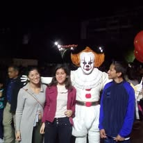

Introduccion
En este apartado tengo muy buenos recuerdos sobre esta etapa de mi vida, ya que tengo muchos recuerdos sobre amigos y vivencias sobre esta etapa de vida, aunque en la actualidad no sé nada de estas personas, las aprecié demasiado durante ese tiempo que los llegué a conocer. En está etapa no tengo más que está foto
